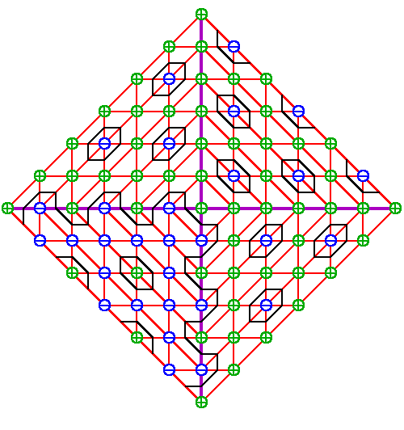

| Viro's Construction: A Sextic (d=6) |
|
|  |
Begin with a regular triangulation
Pw of Reflecting Pw in the axes gives its Newton diagram. A T-curve depends upon signs and placed at the vertices of the triangulation Pw. Extend the signs to the Newton diagram, reflecting each sign and changing those an odd distance from the reflecting axis. Finally, in the triangles whose vertices have different signs, draw a line connecting the midpoints of the edges with differing signs. In this way, we obtain the desired T-curve. This particular construction gives the Harnack Sextic. |